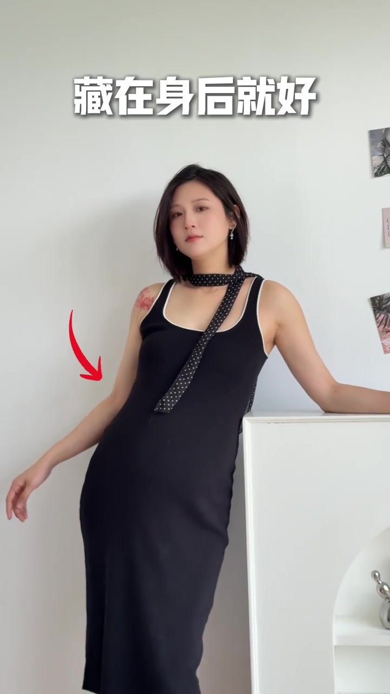
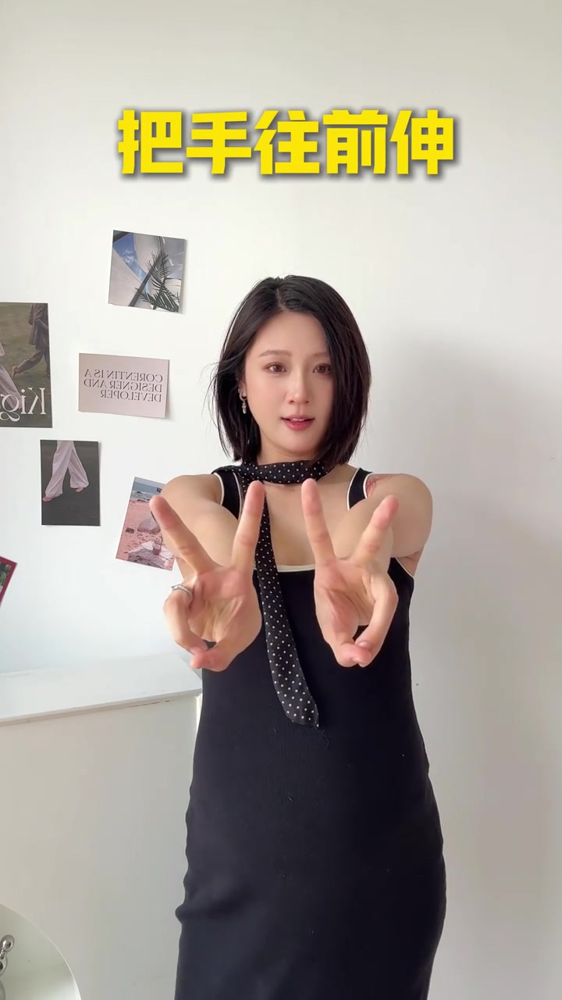

开场先立目标：告别上镜「虎背熊腰」
UP 主面对原相机直出画面开场：人可以胖，但上镜得瘦；不想拍出虎背熊腰。紧接着切到四宫格正确示范，中央黄字打出「得这么摆」——后文四个姿势都按「错误动作 → 修正动作」推进。
画面字幕大意：「人可以胖，但上镜得瘦」「不想拍的虎背熊腰」「这四个姿势得这么摆」
说明：Whisper 把「上镜得瘦」听成「上镜带手」，把「得这么摆」听成「带这么拍」。下文以可见字幕为准；末尾转录区仍保留原始分段。
姿势一：靠着拍照，不要缩着靠
第一条竖排标题打出「1. 靠着拍照」。反面是缩着肩往道具上靠，正面做法是：侧面把手伸出去撑在柜子或台面上，另一只手肘内压、藏在身后——用红箭头标出藏在身后的手臂，避免双臂贴身把上半身撑厚。
画面字幕：「侧面把手伸出去」「手肘内压」「藏在身后就好」
Whisper 将「手肘内压 / 藏在身后」误识为「手肘内牙 / 脏在身后」。

姿势二：回身拍照，不要搭胳膊
第二条先演示错误：回身时双手搭胳膊、把前臂横在身前，上半身显得挤。正确动作是向后打开胳膊，撑出一个三角形空间，再用手把尴尬笑容挡一挡——既留出腰线，又给表情一个自然遮挡。
画面字幕：「2. 回身拍照」「不要搭胳膊」「撑个三角形」「挡一挡就好」
Whisper 将「回身 / 搭胳膊 / 撑个三角形」误识为「回伸 / 打格格 / 成个三角形」。
姿势三：剪刀手拍照，不要贴着脸
第三条常见踩坑是剪刀手贴脸，手和脸挤成一团。UP 主改成把手往前伸，再把剪刀手「塞」进对角线构图——画面用粉色虚线标出对角线，手指落在透视远处，既显手小，也拉开景深。
画面字幕：「剪刀手拍照」「不要贴着脸」「把手往前伸」「再往对角线里塞一塞就好」
Whisper 将「对角线」误识为「对脚线」。

姿势四：撩头发拍照，不要抱成团
第四条反面是双手抱成团贴在胸前。正解是胳膊打开：一手撑在腰上，再挑个肩；另一只手抬起来些撩发——把肩线打开，而不是把手臂堆在身前。
画面字幕：「4. 撩头发拍照」「不要抱成团」「胳膊打开」「撑在腰上」「再挑个肩」「抬起来些就好」
Whisper 将「撩头发 / 再挑个肩」误识为「雕头发 / 再挑补肩」。
收尾提醒：听说你又踩坑了
四个姿势讲完，UP 主抬手指提醒：「听说你又踩坑了，下次可别踩了。」整支视频把显瘦从滤镜话题拉回可操作的肢体空间管理：伸出去、藏起来、撑开、往前塞、挑起来。
画面字幕：「听说你又踩坑了」「下次可别踩了」